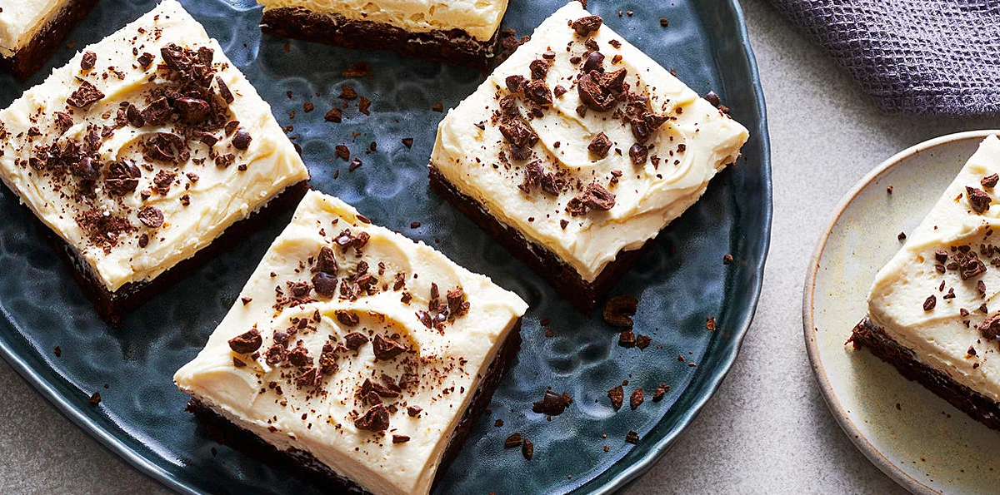
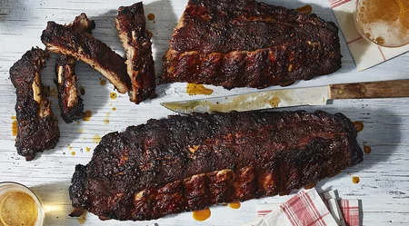

mommy's food
×
Home
View profile
Post Recipes
Explore Recipes
Non-veg recipes
Drinks
Veg recipes
Dinner Spinner TV
Food News
Ask our community
Contact us
Logout
☰

Explore 1000+ recipes shared by users and chefs

Post your recipes
Get likes
Get gift coupons